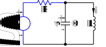
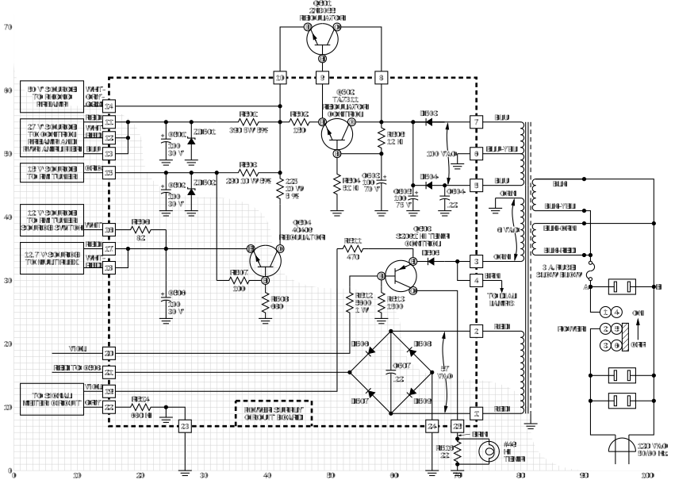
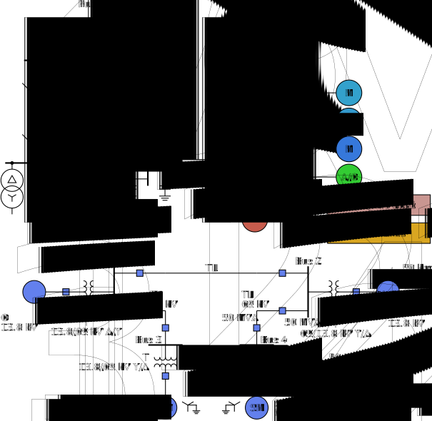
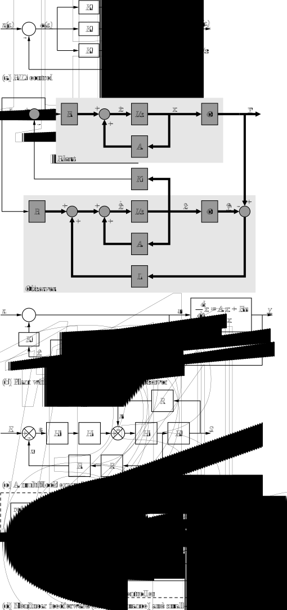
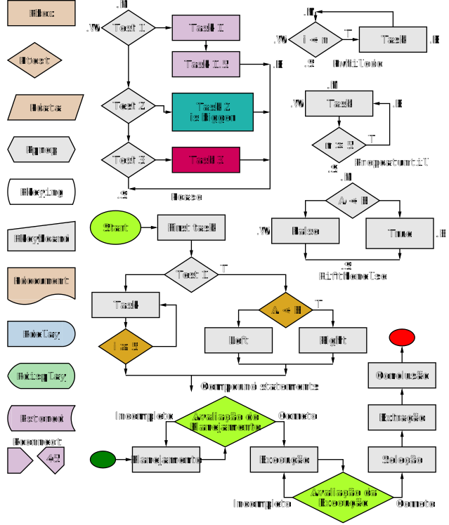

SVG Circuit_macros examples, Version 10.1
Home > Examples > dpvThis file shows a few diagrams in .svg format produced without the use of LaTeX or equivalent. The diagrams have been adapted from the Circuit_macros examples in order to test the svg output of dpic. To generate the equivalent for all the examples, go to the examples/dpv directory and type "make". Typing "make examplesDPVs.html" produces the selection shown here.
Generating svg line art is straightforward but formatting text is not because TeX, LaTeX, and related word processors do not produce svg directly. Either less-sophisticated text formatting must be employed for svg or an intermediate format such as pdf can be produced, followed by an additional processing step to convert to svg. Two possibilities for the latter are dvisvgm --pdf and pdf2svg. However, many circuit and similar diagrams intended for the web do not require sophisticated labels; the examples shown below might be representative. Compare them to those in examples.html
Click on the link to view the source of each diagram.
There are other issues:
- The default font face is not specified in all of these diagrams but is inherited from the enclosing document, so the appearance of labels can differ depending on the browser. Some of these diagrams set the font at the beginning of the diagram source.
- Diagrams such as these contain text labels that have to be treated differently from the LaTeX-compatible versions; for example, apparently there is no direct way to know the bounding box of arbitrary svg text. Consequently, text placement is approximate and may require manual adjustment.
- Rather than patch the original source files for svg production,
edited copies have been used. The configuration file svg.m4 read by
m4 prior to libcct.m4 contains the following macros defined for svg.
Others could be defined to exercise some of the media capabilties
of svg. They are subject to change:
-
svg_font( font-face,nominal size[:dptextratio],textoffset, dpic commands) : Change font face, size, textratio and dpic textoffset parameters. Change font face and dpictextht ,dptextratio , andtextoffset parameters. If arg4 is blank, the font is changed and requirescommand "</g>" to cancel the font change.
Note: Nominal height = text height in drawing units; actual height = nominal ht xdptextratio .
Examples:
svg_font(Times)
svg_font(Times,14bp__)
svg_font(sans-serif,14bp__:0.71)
svg_font(Times,11bp__,1bp__,"text" at A)
svg_font(font-family="Times")
svg_font(font-family="Times" font-style="italic")
svg_font(style="font-family:Times; font-style:italic") svgfontratio( font name) ; Reasonabledptextratio value for common fonts, used bysvg_font .svg_tspan( text attributes, text) ; e.g.svg_tspan(font-style="italic" font-size="75%",XYZ) svg_it( text) : for italicssvg_tt( text) : for monospace (courier)svg_sf( text) : sans-serif (Helvetica)svg_norm( text) : for normal textsvg_bf( text) : for bold facesvg_small( text, percent) : to set a smaller text size, default 66svg_fsize( text, percent) : for setting larger or smaller text size, default 100svg_sub( text, size percent, y displ, x displ) : subscriptsvg_ul( text) : underlined textsvg_ol( text) : overlined textsvg_sup( text, size percent, y displ, x displ) : superscriptsvg_hat( character) : circumflex-accented charactersvg_frac( numerator[:wid], denominator[:wid]) : basic fraction, wid in drawing unitssvg_rot( degrees, "text" [at position]) : Rotate text degrees (default 90) ccw. Requiressvg_rot_init( filename) and the source must be processed twice.svg_rot_init( filename) : filename is the basename of the output ofdpic -v filename.pic > filename.svg svg_symbol( text) : allow quoted pound sign in text, e.g.,svg_symbol(10&`#'176;) produces 10°svgLink( URL, drawing object,[B]) : link to external file using <a xlink:href=...>...</a> (default istarget="_blank" unless arg 3 = B)svgLinkString as above but for strings attached to objects- Greek and other symbols:
svg_alpha α svg_beta β svg_Gamma Γ svg_gamma γ svg_Delta Δ svg_delta δ svg_epsilon ε svg_zeta ζ svg_eta η svg_Theta Θ svg_theta θ svg_iota ι svg_kappa κ svg_Lambda Λ svg_lambda λ svg_mu μ svg_nu ν svg_Xi Ξ svg_xi ξ svg_Pi Π svg_pi π svg_rho ρ svg_Sigma Σ svg_sigma σ svg_tau τ svg_upsilon υ svg_Phi Φ svg_phi φ svg_chi χ svg_Psi Ψ svg_psi ψ svg_Omega Ω svg_omega ω svg_micro μ svg_ohm Ω svg_lt < svg_gt > svg_leq ≤ svg_geq ≥ svg_prime ′ svg_backsl \ svg_pound # svg_comma , svg_lparen ( svg_rparen ) svg_circ ˆ svg_deg ° svg_grave ` svg_emsp | | svg_ensp | | svg_thinsp | |
-
- Inkscape: It may be efficient to define elements by macro and to place them using a wysiwyg graphics editor. A draft page intended for Inkscape is included. A reasonable variety of elements is defined but many more could be added and they should be customized for particular applications. Adjustments may also have to be made to obtain the proper snap-to actions.
- Link experiments: Click on the resistor or source of quickDPV to go to external files in new windows. Click on "n-port" in NportDPV to replace the diagram and then "back" to return.
- Some of the assumptions used to create this draft may be naïve. Comments are welcome.
|

|
|

Fig. 2 (ConnectorsDPV.m4):
Some integrated circuits and connectors with simple geometry
and lists of labels
Fig. 3 (NportDPV.m4):
The
Fig. 4 (ex01DPV.m4):
Two simple labeled circuits
Fig. 5 (CsourceDPV.m4):
Realization of a controlled source
(illustrating stacked element labels)

Fig. 6 (HeathkitDPV.m4):
The power supply of a Heathkit AR-15 (Now, that
was a receiver!) with custom transformer and other elements,
drawn on a grid (partially shown) to aid in placement

Fig. 7 (EEPDPV.m4):
Part of a single-line diagram of a power distribution system
using draft elements

Fig. 8 (controlDPV.m4):
Control-system block diagrams
Fig. 9 (ByteDPV.m4):
Elementary splines

Fig. 10 (FlowDPV.m4):
A flowchart sampler
Fig. 11 (paletteDPV.m4):
A draft palette of a few elements for Inkscape using
a 1 mm grid